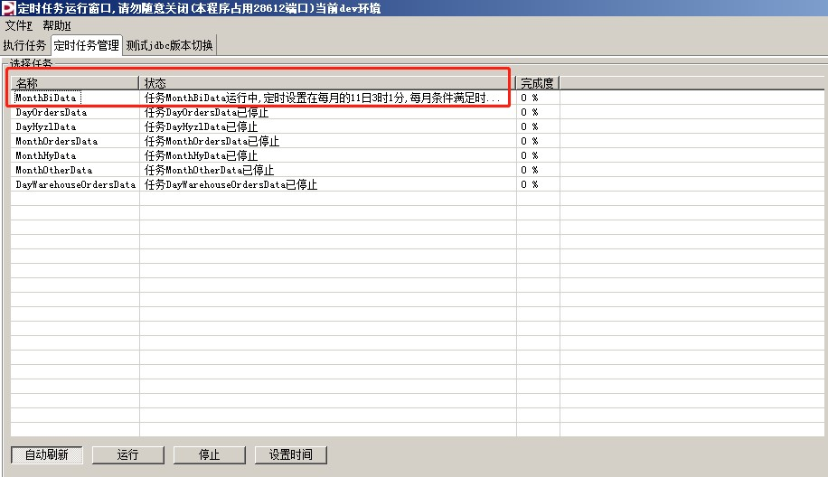
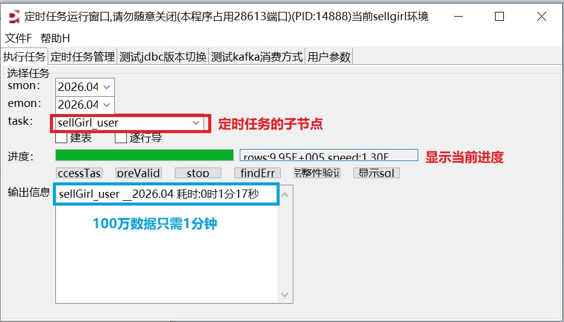
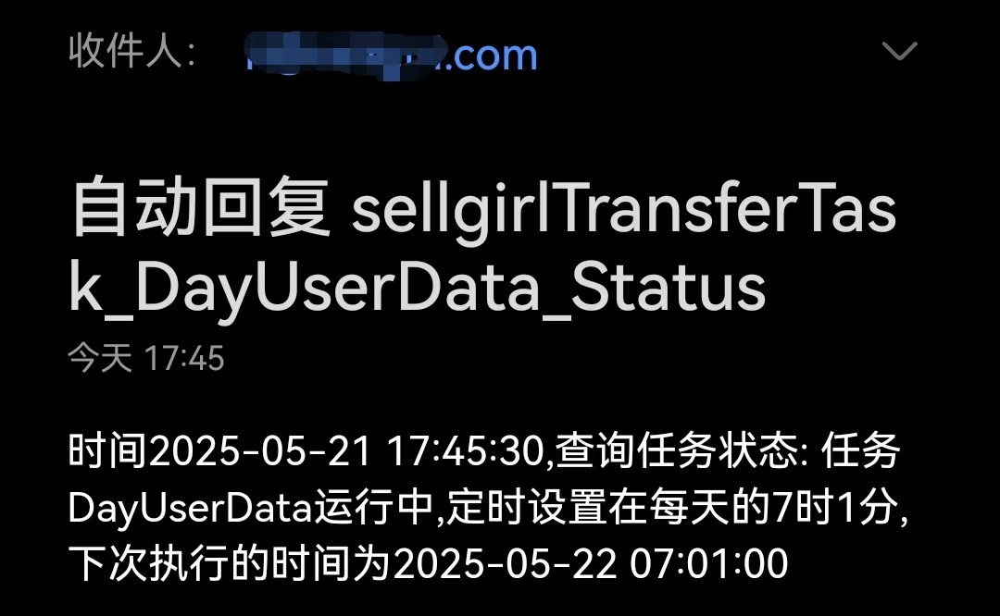
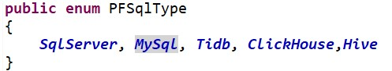
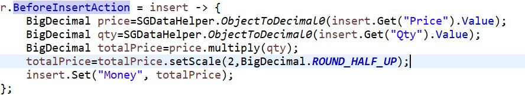

数据迁移工具展示
1. 定时任务的可视化管理，子作业通过有向图和多线程控制其执行与停止

2. 允许手动迁移历史数据的设计

3. 通过本人开发的email指令，远程控制定时作业,启动、停止、显示当前状态等，如图：

4. 完善的异常捕捉机制，失败补偿，以及多角色订阅的异常通知功能
5. 已经兼容非常多的数据库，包括mysql新旧版、sqlserver、clikhouse、tidb等，代码上可扩展性强，随时可以增加对其它类型数据库的支持

6. 允许在数据迁移时高效地修改数据(几乎不影响数据迁移的性能)
7. 还有很多好用的功能，比如：自动创建目标表、数据校验 等
